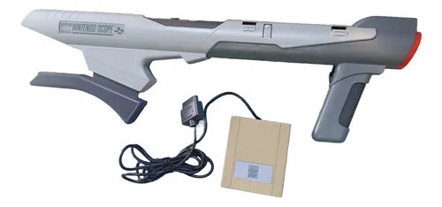
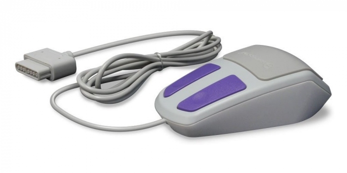
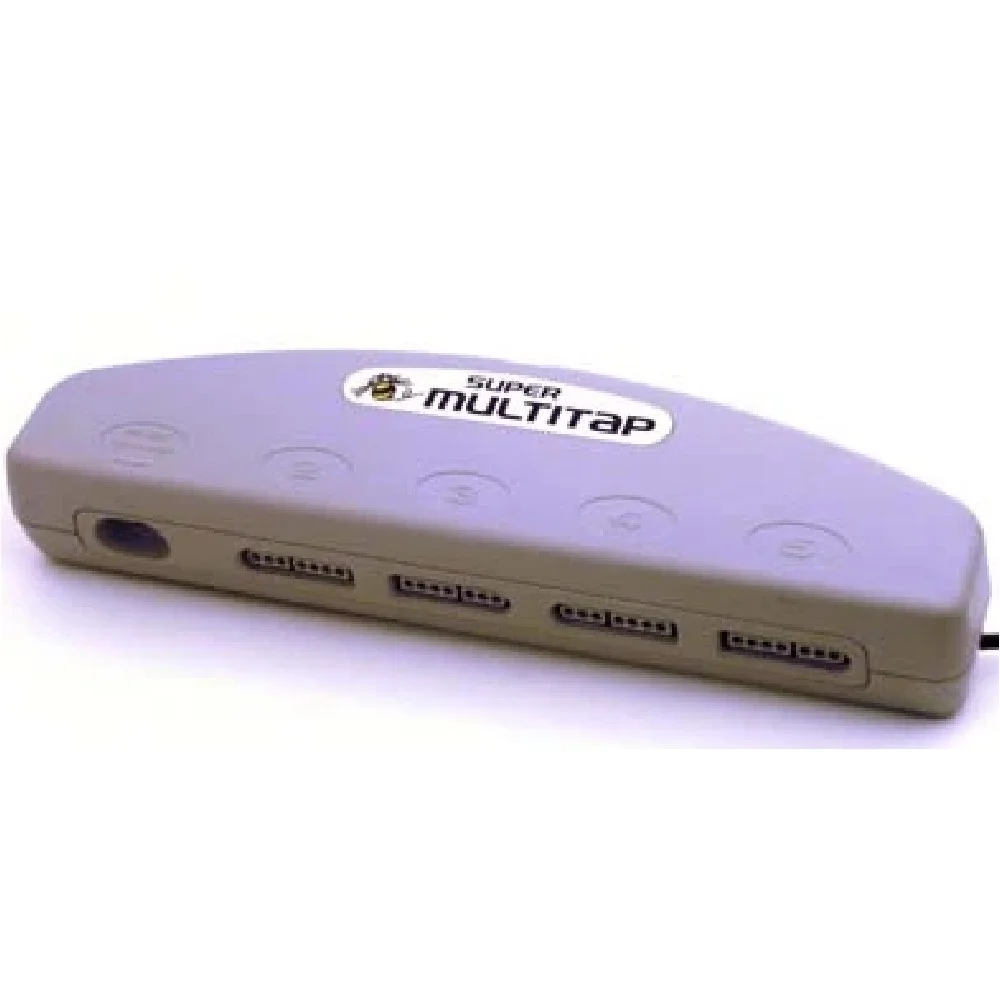

SNS-SUPER NINTENDO
O Super Nintendo Entertainment System (SNES), conhecido como Super Famicom no Japão, é um console de videogame de 16 bits lançado pela Nintendo em 1990/1991. É o sucessor do aclamado Nintendo Entertainment System (NES) e foi um marco na indústria dos videogames, com gráficos e sons avançados para a época.
ACESSÓRIOS NOTAVEIS
Super Scope:a bazuca sem fio que utilizava um receptor infravermelho para interagir com jogos compatíveis.
Super Mouse: Semelhante a um mouse de computador, usado com jogos como Mario Paint.
Multitaps: Acessórios que permitiam conectar mais de dois controles ao console, ideais para jogos multiplayer.
